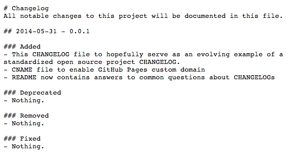

Keep a CHANGELOG
Logging is caring about your open source users.
What's a CHANGELOG?
A CHANGELOG is a file which contains a curated chronologically ordered list of notable changes for each version of an open source project.

What's the point of a CHANGELOG?
To make it easier for users and contributors to see precisely what notable changes have been made between each release (or version) of the project.
Why can't people just use a git log diff?
Because log diffs are full of noise. Can we really expect every single commit in an open source project to be meaningful and self-explanatory? That seems like a pipe dream.
Is there a standard CHANGELOG format?
Sadly, no, but this is something I want to change. This project contains what I hope will become the standard CHANGELOG file for all open source projects, so take a look at it and please suggest improvements.
What makes up a good CHANGELOG?
I'm glad you asked, since I have quite a few opinions about that.
- a good CHANGELOG is made for humans, not machines, so it should be very legible.
- the sub-sections of a CHANGELOG should be based on releases or versions.
- each version should come with a release date in a sensible format: YYYY-MM-DD.
- within each release, changes should be classified in specific sections that describe their impact on the project:
Addedfor anything new: features, APIs, etc.Deprecatedfor previously stable features that will be removed in upcoming releases.Removedfor previously stable features that are removed in this release.Fixedfor any bug fixes.Securityto invite users to upgrade in case of vulnerabilities and exposures.
- each section and sub-section of a CHANGELOG should be easily linked to (hence Markdown over plain text)
Can CHANGELOG files be automatically parsed?
As the good people maintaining Gemnasium know too well, it's very hard. That's because people follow wildly different formats for their files. Again, I hope to change that, but in the meantime, you might be interested in Vandamme, a Ruby gem used by Gemnasium to parse many open source project CHANGELOGs.
Why do you keep writing CHANGELOG in all caps?
You're right, that is a bit shouty. Maybe it's because of the de facto convention that files pertaining to an open source project should be in all caps, for instance: README, LICENSE, CONTRIBUTING.
I like it because it denotes that these files are metadata for the project, similarly to open source project badges they draw attention to themselves as information people should be aware of if they mean to use the project or contribute to it.